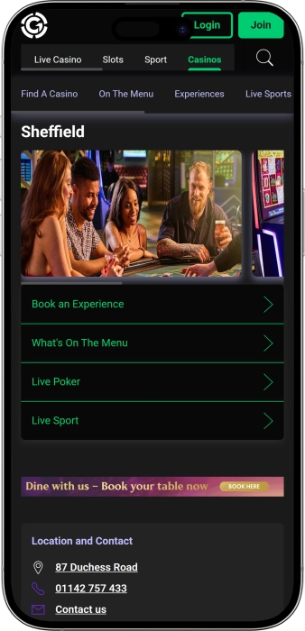

Exclusive welcome offer of
Exclusive welcome bonus of
Grosvenor Casino Sheffield — 24/7 gaming, poker, slots and live sport
Top Casinos
Bonus Details
Casino
Bonuses
Rate
Free Spins
More Info
Get
Advantages
-
24/7 tables: roulette, blackjack, poker
-
Slots and e‑tables with nonstop action
-
Poker room with cash games and tourneys
-
Progressive jackpots delivering bigger payouts
-
Game promos and match‑day free bets
-
Fast winnings collection at the cashier
-
Live sport on multiple big screens
- This casino stands out for blending high‑energy gaming with a relaxed social vibe. The 24/7 format suits both quick drop‑ins and full nights out with food, drinks, and live sport.
Grosvenor Casino Sheffield App


About Grosvenor Casino Sheffield
It stands out with 24/7 gaming and a strong live‑sport atmosphere across multiple screens. You also get tables, slots, poker, and late‑night dining under one roof.
- Jackpots up to £10,000+
- Stakes from £0.10
- Payout in 10–30 minutes
Grosvenor Casino Sheffield is a modern venue with a lively feel and an easygoing night‑out vibe. It brings classic table gaming and fast‑paced slots together in one space. The layout is designed for comfort, letting you choose between quieter corners and busier gaming areas.
A 24/7 schedule makes it convenient at any hour. Poker fans can enjoy a dedicated setting for cash games and tournaments. For groups, the bar and social seating add to the experience. Live sport on screens boosts the atmosphere, especially on big match nights. Food options work well for both light bites and proper meals. Staff are generally welcoming and can guide first‑timers through the basics. Overall, it’s a venue where gaming, dining, and entertainment flow naturally into one evening.
A Night Without Pauses: Style, Atmosphere, and the Grosvenor Casino Sheffield Experience
Grosvenor Casino Sheffield feels like a contemporary city casino built around comfort and momentum. The vibe is energetic and social rather than overly formal, making it easy to drop in briefly or stay for a full night. The floor is typically zoned so slots, live tables, and poker can each have their own rhythm. Lighting and interior styling lean modern, with seating that works for both groups and solo visitors. The result is a flexible venue for gaming and socialising.
A major highlight is the 24/7 opening schedule. If you fancy a late‑night session or an early‑morning visit, the round‑the‑clock format removes timetable stress. It’s especially handy when you’re pairing the visit with other plans, like a show or a night out in the city. Peak hours bring a more “Friday night” energy, while late weekdays can feel calmer for focused play. At the tables, the experience is generally straightforward, with staff helping guests understand limits and basics.
The bar side is central to the overall feel. Drinks are designed to suit the pace of play, and there are comfortable spots to chat through a poker hand or a key moment on the screens. On big sporting nights, the bar atmosphere often becomes the main draw, with guests arriving to watch and celebrate together. Live sport adds intensity and turns the venue into a social hub for groups. If you prefer quieter play, it’s usually easy to step back into calmer gaming areas.
Food and late‑night dining also help the night flow without interruption. Menus commonly balance light bites with more filling dishes, so you can match your meal to your plans. That makes it simple to build a complete night around dinner, gaming, and drinks, or to stop by for a quick bite between sessions. The layout supports convenience, keeping tables, slots, bar, and dining within easy reach. For many visitors, that “everything in one place” feeling is a key part of the appeal.
On events, the focus is often on regular gaming activity and themed nights that keep weekdays lively. Poker can be supported by tournament scheduling, while sport tends to drive match‑night watch parties and special viewing sessions. Seasonal moments and festive dates may bring a different mood and themed offers. For returning guests, club mechanics and repeat‑visit perks can matter as much as the games themselves. Loyalty elements often centre on accumulating privileges, tailored offers, and invitations.
As for hotels, the casino is typically enjoyed as a standalone night‑out destination, with accommodation chosen nearby from a wide range of city options. That suits travellers who want to pick a hotel based on budget and itinerary rather than a single integrated complex. The venue fits neatly into a “dinner — gaming — sport — late bar” route, then a quick ride back to your hotel. Overall, Grosvenor Casino Sheffield offers more than gaming: it delivers a full evening ecosystem built for varied plans.
Service and Money: Staff, Payments, and Collecting Winnings at Grosvenor Casino Sheffield
Staff are a core part of what makes the visit comfortable. Dealers keep games running at a clear, controlled pace, while floor teams help with seating, game availability, and general guidance. First‑timers are often supported with basic explanations for roulette and blackjack so early bets feel less intimidating. During busy periods the team operates at speed, and in quieter hours there’s more time for questions. Overall, service is geared towards a safe and well‑managed gaming environment.
English is the main language used on the floor and for formal guidance. In a busy city venue you may encounter staff who understand simple requests in other languages, but detailed rules, promotions, and payout procedures are typically handled in English. It’s normal to ask polite questions about table limits, entry rules, and offer terms. Staff often assist with practical needs such as where to exchange chips, how to register, and how to find specific areas. That support lowers the barrier for guests visiting a casino for the first time.
The on‑site currency is pound sterling. Payments are commonly accepted in cash and by bank card, and contactless methods may be available where terminals support them. Cards are usually convenient for bar transactions and general spend, while cash can be handy for smaller, quick exchanges. Some transactions may require identity checks, especially where larger amounts are involved. These steps are part of standard security and responsible‑play practice.
ATMs are typically available either inside the venue or close by, allowing guests to withdraw cash if needed. Currency exchange on site may be limited, so visitors carrying foreign currency often find it easier to exchange in advance through a bank or exchange provider. If you have questions about limits or potential fees, staff can advise on the smoothest way to fund play and complete cashier transactions. Larger movements may trigger additional source‑of‑funds checks. Such checks are common and designed to meet financial compliance requirements.
Collecting winnings is usually handled at the cashier, where chips and confirmed results are exchanged for cash or processed via an approved payout method. For significant sums, a bank transfer or a more formal payout procedure may apply, requiring valid ID and accurate personal details. Processing time depends on the amount and whether additional checks are needed, but standard payouts are generally quick. If a win comes from a promotion or tournament, there may be specific verification steps and paperwork explained in advance. The aim is to balance speed with security.
On taxation, casino winnings for private players are generally not subject to withholding by the venue under typical gambling frameworks. That said, individual circumstances can differ, especially if income is declared elsewhere or linked to professional activity. In simple terms, the casino pays out according to its rules, and personal reporting obligations depend on your status. If your situation is complex, it’s sensible to check with a tax adviser in your place of tax residence. This keeps things clear and stress‑free after a successful session.
Visiting Rules at Grosvenor Casino Sheffield: Entry, Dress Code, Restrictions, and Getting There
A casino visit starts with age and identity checks, so bring valid photo ID. Entry is for adults only, and staff may request additional verification at any time. The dress code typically leans towards neat smart casual to keep the atmosphere comfortable for everyone. Calm, respectful behaviour is expected, especially around live tables. Many casinos apply rules on phone use and filming near tables to avoid disruption. Guests who are heavily intoxicated may be refused entry or asked to leave. Some areas may have extra guidelines about drinks near gaming equipment. Big sporting nights are busier, so arriving earlier helps if you want a good spot near screens. Getting there is generally straightforward by taxi or public transport as the venue is set up for city access. Drivers should plan for parking options and any time limits that may apply. If you’re staying late, it’s worth planning your journey home in advance. For any rule‑related questions, staff at the door or service desk can clarify quickly.
Key rules and conditions
- • Age: 18+ only; ID checks may be mandatory
- • ID: passport/driving licence/official photo document
- • Registration: first‑time guests may complete quick sign‑in
- • Conduct: no aggression, disruptive behaviour, or harassment
Dress code
- • Recommended: smart casual, clean footwear, tidy appearance
- • Not advised: sportswear, beachwear, very dirty or heavily torn clothing
- • Match days: team shirts are usually fine if the look stays neat
Restrictions
- • Photos/videos: often restricted in gaming areas and at tables
- • Phones: limitations may apply at live tables
- • Alcohol: heavily intoxicated guests may be refused entry
- • Security: bag checks and entrance screening may occur
Parking and getting there
- • By car: guest parking may be available; check conditions on arrival
- • By taxi: a practical option late at night
- • Public transport: city routes generally serve the area well
Grosvenor Loyalty Programme: Tiers, Perks, and Bonuses for Regular Guests
A Grosvenor‑style loyalty programme is usually designed to reward repeat visits and active play. It can unlock extra value, from tailored offers to invitations for special events. Registration typically takes only a few minutes and requires basic details plus identity verification. Once enrolled, members collect points from gaming activity and selected on‑site spend, then redeem them for rewards. Higher activity usually means a higher tier and stronger benefits, including faster points earning. Many guests like the programme because perks can be more targeted to their preferences—slots, tables, poker, or match‑night visits. The service element can matter too, such as early info on tournaments, easier booking, and small complimentary extras. Membership generally doesn’t change how you visit; it simply tracks activity and opens rewards. Perks can be linked to specific days and events, making it easy to plan value nights. The more consistently you play and visit, the more benefits you unlock without changing your routine. Terms and rewards may shift seasonally, so it helps to check what’s currently available on site. Overall, the loyalty scheme turns regular visits into a cumulative experience where each night can deliver extra value.
Registration conditions
- • Age & ID: 18+ and valid photo ID for verification
- • Details: name, date of birth, contact info for updates
- • Activation: card/account issued and linked to visits
- • Time: typically 3–5 minutes with documents ready
Tiers and how to reach them
- • Start (entry tier): core offers and points earning
- • Silver: boosted earning and more personalised coupons
- • Gold: priority invitations and enhanced complimentary extras
- • Platinum/VIP: top‑level privileges and a more tailored approach
Bonuses and perks
- • Welcome perks: visit vouchers, e.g. £5–£10 on food/drinks
- • Points boosts: faster earning, e.g. x1.25 / x1.5 / x2 by tier
- • Free bet / promo chips: e.g. £5–£20 tied to select tables/events
- • Slot offers: e.g. 10–50 spins during promo hours on terminals
- • Poker perks: extra chips/re‑entries, e.g. +1,000–5,000 tourney chips
- • Complimentary extras: coffee/soft drinks or desserts on select days
- • Invitations: closed nights, themed sport viewings, festive events
- • Personal offers: 10–20% off menu items or bar combo deals
Software Providers
Entertainment and Gaming at Grosvenor Casino Sheffield
Bonuses and Special Offers at Grosvenor Casino Sheffield: Gaming, Sport, Events, and Seasonal Deals
Beyond loyalty membership, casinos often run standalone promotions that add value and excitement. These offers can be tied to specific weekdays, big match nights, or tournament sessions. Many are designed to encourage guests to explore different areas, such as moving from tables to slots or trying a poker event for the first time. Sport‑focused visitors often see popular bundle formats that combine live viewing with bar specials. Gaming offers frequently appear during peak periods, when draws and extra prizes lift the atmosphere. In the slot area, promotions may include jackpot runs or additional win chances as part of a themed series. Poker promotions often show up as extra chips or reduced buy‑ins on selected days. Seasonal events change the tone with festive nights, themed weeks, and limited menus. Another layer is entertainment‑led evenings where gaming sits alongside live sets, DJs, or themed parties. These nights are especially appealing for groups who want one complete plan without changing venues. Because promotion terms can change, it’s smart to check details on arrival before joining. Overall, the mix of offers helps the venue feel like a regular events hub rather than just a gaming floor.
- • Slot jackpots: wins of £1,000–£10,000+ on selected machines
- • Slot happy hours: 10–30 bonus spins in promotional windows
- • Tournament prize pools: £250–£2,000 awarded on the night
- • Poker promo: +2,000–10,000 tournament chips for early registration
- • Rake race/leaderboard: £50–£500 prizes for active cash players
- • Match‑day free bet: £5–£10 free bet with a bar bundle
- • Players’ menu bundles: 10–25% savings on late‑night selections
- • Seasonal nights: £5–£15 vouchers and themed prize draws
- • Dinner & show format: packages from £20–£35 depending on the night
- • Themed tournaments: 5–15% buy‑in discounts on selected dates
Popular Games at Grosvenor Casino Sheffield: Tables, Slots, and Poker
A venue like this typically offers a mix designed for different play styles, from quick slot sessions to strategic live‑table decisions. Newcomers often enjoy electronic roulette, where the interface makes betting clearer and reduces the pressure of live pacing. Classic players gravitate to roulette and blackjack because the rules are approachable and the dealer‑led energy feels authentic. Fast poker variants appeal to those who want short rounds and quick outcomes. If you’re after deeper skill play, a poker room with cash games and tournaments adds strategy, discipline, and opponent reading. Slots draw attention with varied themes and mechanics, plus the extra excitement of jackpot potential. Evenings tend to favour high‑tempo games, while quieter hours suit more measured table play. Many guests mix formats—blackjack hands, a slot run, then a bar break. The key advantage is proximity: you can switch game types instantly based on mood. If you want fun without complex rules, roulette and e‑tables are a smooth starting point. If you want competition and narrative, poker tournaments deliver that structure. Overall, the most popular choices sit across classic tables, slots, and poker.
- • American/European Roulette: simple bets, high energy, classic live‑table feel
- • Electronic Roulette: beginner‑friendly, quick rounds, clear on‑screen betting
- • Blackjack: decision‑based play, accessible strategy, varied limits
- • Three Card Poker and fast poker variants: short rounds, clear hand ranking, quick results
- • Baccarat: straightforward rules, steady pace for measured play
- • Poker Room (Texas Hold’em): cash games and tournaments, skill‑driven competition
- • Slots: wide themes, bonus rounds, jackpot excitement
- • E‑Tables: flexible stakes, quick onboarding, great for groups
Betting Limits at Grosvenor Casino Sheffield: Minimums and Maximums by Popular Games
Betting ranges help you pick a comfortable pace, from cautious starter wagers to more serious play for experienced guests. Casinos typically offer layered limits: electronic games provide the lowest entry point, while live tables cover a broader spread. In poker, limits depend on the format—cash games are set by blinds, while tournaments are defined by buy‑ins. Keep in mind that exact limits can vary by time of day, demand, and the specific table or tournament series in operation.
| Game Type | Minimum Bet | Maximum Bet |
|---|---|---|
| Electronic roulette | £0.10 | £20 |
| American roulette (live) | £0.50 | £400 (per number) |
| Blackjack | £2 | £1,000 |
| Three Card Poker | £2 | £200 |
| Baccarat | £5 | £1,000 |
| Slots | £0.20 | £5–£10 (per spin) |
| Texas Hold’em cash | £1/£2 (blinds) | £5/£10+ |
| Poker tournament | £20 | £200+ |
Entertainment and Events at Grosvenor Casino Sheffield: Live Sport, Parties, and Regular Activities
Entertainment here often revolves around two main draws—gaming and live sport. In the evenings the venue can feel like a lively hub where you can follow a match while moving between slots, tables, and the bar. Regular live sport creates a shared “match‑night” buzz, especially during headline fixtures when the room runs on one collective rhythm. This works brilliantly for groups: some play, some watch, then everyone meets at the bar.
Regular activity is also boosted by gaming‑led events—poker tournaments, themed sessions, and special nights focused on particular formats. Tournament poker tends to bring a dedicated crowd and adds competitive energy that feels different from everyday cash play. Live tables can be supported by themed evenings or mini challenges, while slots may feature promotional draws that make the floor feel eventful. That variety helps each visit feel fresh rather than repetitive.
The night‑time feel often comes through in a stronger music‑and‑bar focus. On selected days the vibe can lean closer to a “show night,” adding DJ sets, themed parties, or guest entertainment alongside gaming. Festive dates typically amplify this with special menus, complimentary touches, prize draws, and bolder décor. For guests who want a full social night out as well as gaming, that one‑venue convenience is a major advantage.
All entertainment and activities
- • Live sport on screens: regular matches and tournaments in a bar‑led setting
- • Match‑night parties: big fixtures, shared viewing, bar specials
- • Poker tournaments: scheduled competitive nights with prize placements
- • Cash poker: sit‑and‑play format for flexible sessions
- • Slot promotions: draws, themed series, extra floor energy
- • Themed gaming nights: special formats spotlighting particular games
- • Seasonal events: holidays, themed weeks, added entertainment touches
- • Music nights/DJ sets: later‑night momentum and a more club‑like vibe
- • Group social formats: comfortable zones designed for shared visits
Food, Bars, and Relaxation at Grosvenor Casino Sheffield: Dining Nights and Comfortable Social Spaces
A great casino night often starts with the right pace, and the bar and restaurant help set it here. The venue works well whether you arrive for dinner and drinks first or step straight into gaming and add food later. In the evening, the bar atmosphere becomes a standout feature as guests chat, review hands, and follow live sport on screens. For groups, this one‑stop format is a key benefit because the night flows naturally without changing venues.
The restaurant side typically focuses on an all‑round menu that suits both light bites and a full meal. Late‑night service matters, as it keeps the evening moving without a kitchen cut‑off interrupting plans. That’s especially helpful if you play longer sessions or arrive after other city events. Comfortable seating makes it easy to take a break, reset, and head back to the tables with a fresh mindset.
More broadly, the venue tends to feel like a night‑out hub where drinks, food, sport, and gaming sit in one coherent experience. This makes planning flexible—you can stay for an hour or settle in for a late finish. For visitors travelling into the city, accommodation can be chosen separately from a range of nearby hotels. That approach gives freedom to pick a hotel by budget and style while keeping the casino as the entertainment anchor.
All relaxation spots
- • Restaurant: main menu, comfortable seating, dinner and late‑night dining
- • Bar: drinks, socialising, light bites, relaxed evening tempo
- • Sports viewing area: match viewing on screens with big‑game energy
- • Social seating zones: spaces for groups and breaks between sessions
- • Nearby hotels (local area): flexible accommodation options for city visitors
Frequently Asked Questions
Typically there are no strict time caps, but staff may step in if there are signs of problematic play or behaviour issues.
Responsible‑play options often include limits, breaks, staff support, and self‑exclusion routes if you need stronger controls.
Private formats are often possible—dining, sport nights, or gaming experiences—subject to date, group size, and availability.